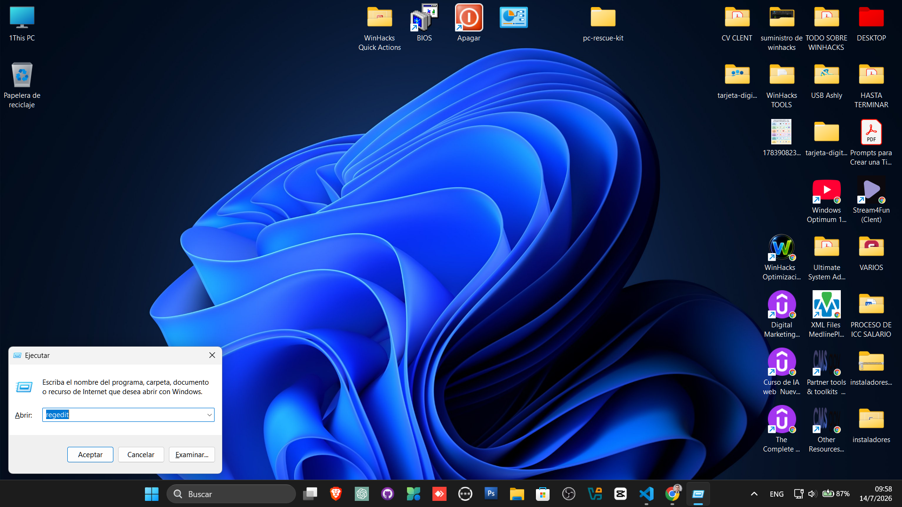
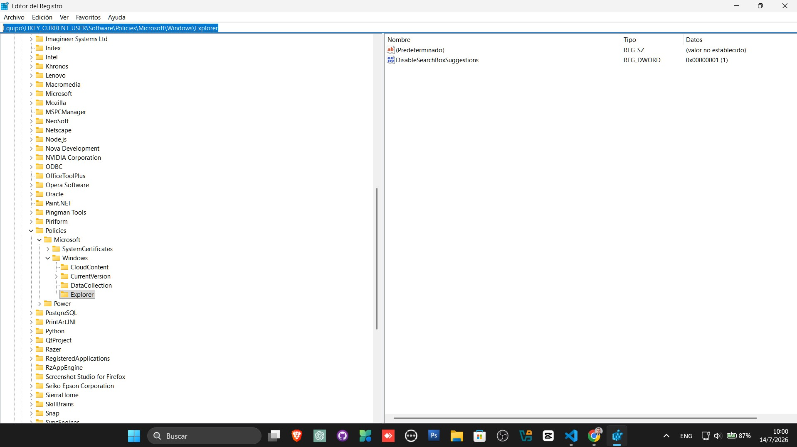
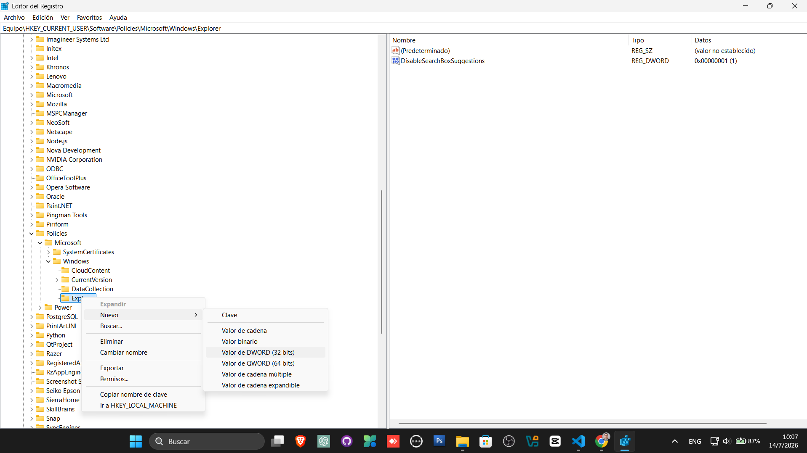
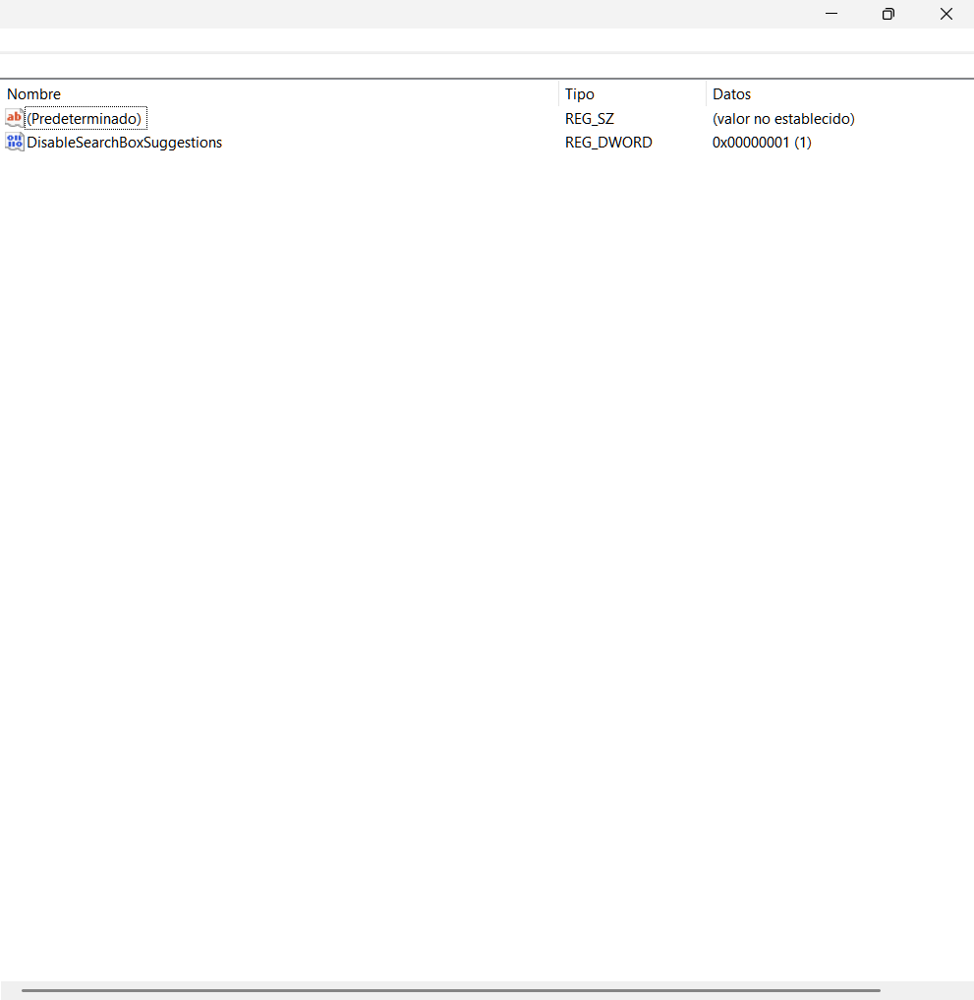
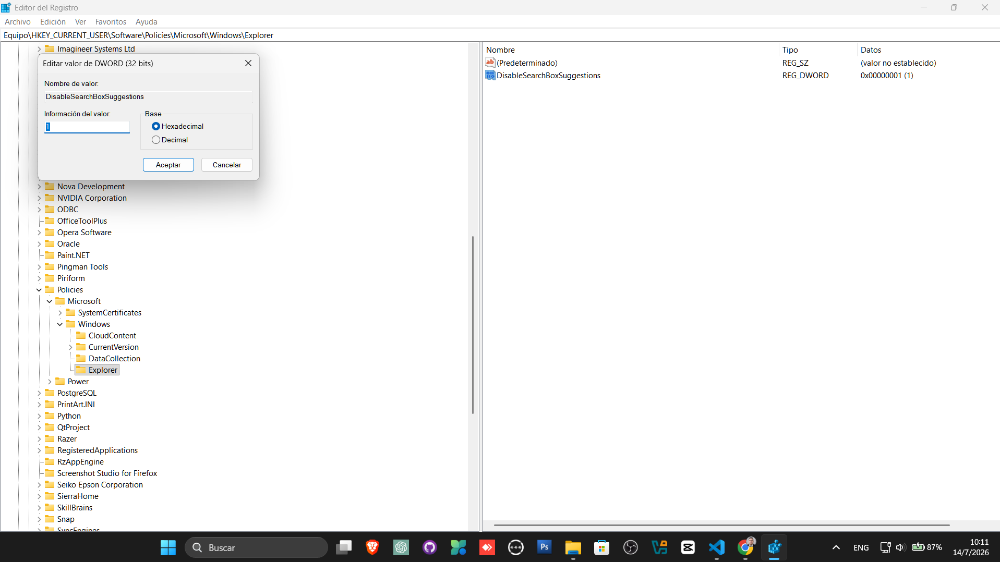
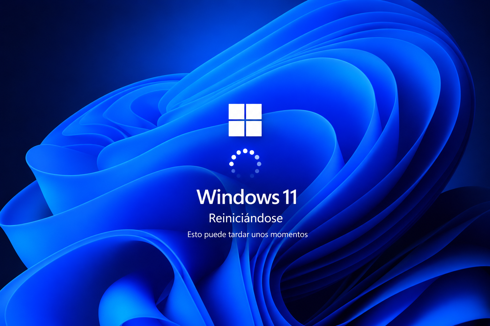
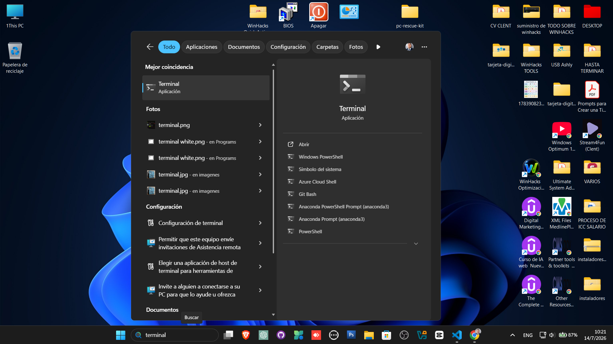

Video rápido
Quita los resultados web de Windows Search
En este Short se muestra cómo crear una directiva en el Registro para reducir las sugerencias de Internet dentro de la búsqueda de Windows.
Qué aprenderás
- Cómo abrir el Editor del Registro.
- Cómo navegar a la directiva de Windows Search.
- Cómo crear el valor DisableSearchBoxSuggestions.
- Cómo configurar el valor correctamente.
- Cómo restaurar el comportamiento original.
¿Qué cambia este ajuste?
Windows Search puede mezclar aplicaciones, configuraciones y archivos locales con sugerencias o resultados relacionados con Internet. Esto puede hacer que encontrar un programa sea más lento o confuso.
El valor DisableSearchBoxSuggestions funciona como una directiva del usuario actual y puede reducir la integración de sugerencias web dentro del cuadro de búsqueda.
💡 Consejo WinHacks
Usa este ajuste si prefieres una búsqueda más limpia, enfocada en aplicaciones, configuraciones y archivos almacenados en tu computadora.
Importante
El comportamiento puede variar según la edición, compilación y políticas instaladas en Windows 11. Microsoft también puede modificar el funcionamiento de Windows Search mediante actualizaciones.
Crea una copia antes de modificar
Antes de tocar el Registro, exporta la clave correspondiente o crea un punto de restauración. No borres valores que no formen parte de esta guía.
Paso a paso
Abre la ventana Ejecutar
Presiona Win + R para abrir la ventana Ejecutar.

Abre el Editor del Registro
Escribe el siguiente comando y presiona Enter.
regedit

Abre la ruta correcta
Copia esta ruta y pégala en la barra superior del Editor del Registro.
HKEY_CURRENT_USER\Software\Policies\Microsoft\Windows\Explorer

¿No existe la clave Explorer?
Haz clic derecho sobre la clave Windows, selecciona Nuevo → Clave y escribe:
Explorer
Crea un valor DWORD
Dentro de la clave Explorer, haz clic derecho en un espacio vacío y selecciona:
Nuevo → Valor de DWORD (32 bits)

Escribe el nombre exacto
Asigna al nuevo valor este nombre:
DisableSearchBoxSuggestions

Cambia el valor a 1
Haz doble clic sobre DisableSearchBoxSuggestions y configura:
- Información del valor: 1
- Base: Decimal
1

Reinicia el Explorador o Windows
Cierra el Editor del Registro y reinicia Windows. También puedes cerrar sesión para que la directiva se aplique.

Prueba Windows Search
Abre la búsqueda de Windows y escribe el nombre de una aplicación, configuración o archivo local.

Resumen de la configuración
Ruta del Registro
HKEY_CURRENT_USER\Software\Policies\Microsoft\Windows\Explorer
Tipo de valor
DWORD (32 bits)
Nombre
DisableSearchBoxSuggestions
Valor
1 con base Decimal.
Cómo deshacer el cambio
Para restaurar el comportamiento anterior de Windows Search, vuelve a la misma ruta y elimina el valor DisableSearchBoxSuggestions.
También puedes cambiar su información de valor de 1 a 0 y reiniciar Windows.
DisableSearchBoxSuggestions = 0
✅ Resultado esperado
Windows Search debería mostrar una experiencia más enfocada en aplicaciones, configuraciones y archivos locales, reduciendo las sugerencias y resultados relacionados con Internet.
Errores comunes
No existe la clave Explorer
Créala manualmente dentro de: HKEY_CURRENT_USER\Software\Policies\Microsoft\Windows.
Creé el valor en otra ruta
Verifica que el valor esté dentro de la clave Policies\Microsoft\Windows\Explorer del usuario actual.
El cambio no se aplica
Reinicia Windows. Algunas directivas no se aplican inmediatamente después de cerrar el Registro.
Windows todavía muestra contenido web
El comportamiento puede variar según la compilación de Windows, las políticas configuradas y las modificaciones realizadas por Microsoft.
La búsqueda local parece incompleta
Este ajuste no controla directamente la indexación de archivos. Revisa las opciones de búsqueda e indexación si Windows no encuentra documentos almacenados en tu PC.
Preguntas frecuentes
¿Este ajuste desactiva Internet?
No. Solo modifica el comportamiento de las sugerencias dentro de Windows Search. Tu navegador y conexión siguen funcionando normalmente.
¿Funciona en Windows 10?
Puede funcionar en determinadas versiones, pero esta guía está enfocada principalmente en Windows 11.
¿Necesito crear un DWORD de 64 bits?
No. Debes crear un DWORD de 32 bits, incluso si tu Windows utiliza arquitectura de 64 bits.
¿Debo usar base hexadecimal o decimal?
Para el valor 1, ambas representan el mismo número. En esta guía se utiliza base Decimal para mantener el procedimiento claro y uniforme.
¿Puedo revertirlo?
Sí. Elimina el valor creado o cambia su información de valor a 0 y reinicia Windows.
Recurso gratuito
Descarga 50 secretos de Windows
Aprende funciones ocultas, comandos seguros y ajustes avanzados para dominar Windows 10 y Windows 11.